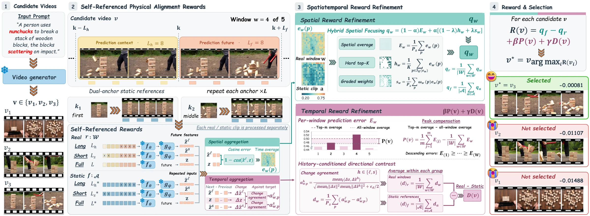

All 7 methods
Swipe left or right to explore the frames
Video
Synchronized playback · Original aspect ratios · Audio muted
World-model rewards · Video generation
Zhejiang University
A video's own static frames provide the reference.
Its dynamics make the difference.
The intuition
A world model can find a scene easy to predict even when its motion is physically implausible. SPAR compares each video's prediction error with static clips made from its own frames, providing a content-matched reference for evaluating dynamics.
Spatial and temporal refinement then focus the reward on where and when physical interactions unfold.
Generating videos with physically plausible dynamics remains challenging despite advances in visual quality. Latent world models offer predictive signals for evaluating physical plausibility, but higher agreement between predicted and observed features may reflect easier-to-predict scene content rather than more plausible dynamics. We propose Self-Referenced Physical Alignment Rewards (SPAR), a framework that uses world-model predictions for inference-time physical alignment. SPAR compares each video's prediction error with that of static clips constructed by repeating its own frames, providing a content-matched reference for evaluating generated dynamics. To account for the uneven spatial and temporal distribution of physical interactions, we introduce a unified spatiotemporal reward refinement strategy. Spatial refinement emphasizes localized prediction discrepancies, while temporal refinement moderates brief error peaks and supplements prediction errors with agreement between predicted and observed feature changes. Evaluations across multiple benchmarks demonstrate that SPAR improves the physical plausibility of both text-to-video generation and image-to-video continuation, bringing generated dynamics into closer alignment with the physical regularities governing real-world events.
01 / See the dynamics
Selected examples across three benchmarks.
Watch each method respond to the same prompt.
Swipe left or right to explore the frames
Synchronized playback · Original aspect ratios · Audio muted
02 / The method
From candidate videos to a refined physical reward.

Repeat each video's own anchor frames to construct static clips that preserve its scene content.
Combine spatial focusing with temporal refinement to capture localized interactions and feature changes.
Use the resulting reward to select physically plausible candidates at inference time.
03 / Quantitative results
Three benchmarks. A shared candidate pool.
One reward configuration.
SPAR, WMReward, and GeoPhys select from the same three MiniMax-H3 candidates per input: 1,614 videos across 538 inputs. The results cover both image-to-video continuation and text-to-video generation.
SPAR · +1.59 points over WMReward
SPAR · +1.67 percentage points over WMReward
SPAR · +3.12 points over WMReward
BestSecond bestHigher is better ↑
04 / Human evaluation
Physical plausibility and event completion,
rated independently.
Mean rating · 1–5 scale · Higher is better · Best · Second best
“Unable to judge” responses are excluded. MiniMax-H3 uses one uniformly sampled candidate fixed before rating.